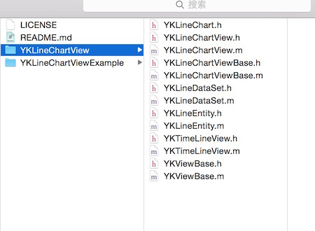

Cocoapods是iOS开发中第三库的依赖管理工具，有了它可以很方便的管理第三库文件，第三库版本更新时也只需要执行更新命令就可以了，很大的提高了开发效率。本文主要是讲如何制作自己的Cocoapods库，以前Cocoapods的制作需要向Github中CocoaPods/Specs的项目pull request。但是在0.33版本的Cocoapods中，提交自己的库信息改为了trunk服务。
准备
首先把自己想要制作的库文件和示例代码托管的到Github上，并release对应的版本号，文件目录结构建议如下图所示。

YKLineChartView 是库源码
YKLineChartViewExample 是示例代码
创建podspec
在上述根目录下创建podspec文件
执行 pod spec create YKLineChartView命令
编辑 YKLineChartView.podspec文件
1 | Pod::Spec.new do |s| |
1 | s.name 库名字 |
执行 pod lib lint命令 检查podspec文件的格式合法性。
注册trunk
第一次提交podspec文件，需要注册trunk。
执行 pod trunk register 邮箱 "用户名"命令
邮箱和用户名和podspec文件中的保持一致，此时会收到一封确认邮件，点击链接确认。
提交
提交自己的podspec文件。
执行 pod trunk push YKLineChartView.podspec命令
等待提交状态。
测试使用
podspec文件提交成功，即可通过Cocoapods测试使用自己的库了。更新Cocoapods仓库信息。
执行 pod setup命令
上述命令可能会很慢，请耐心等待或者更换taobao.ruby源。
更新成功后
执行 pod search命令，查看你制作的库并使用它吧。